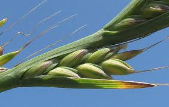

Ivraie enivrante ou herbe à couteaux

Ivraie enivrante ou herbe à couteaux (Lolium temulentum de la famille des Graminées)
Toxique pour le Korat.
Partie toxique pour les chats en général et le Korat en particulier :
Toute la plante.
Symptômes du processus pathologique :
Ivresse, vertiges, démarche chancelante, tremblements, mydriase, perte de l'équilibre et convulsions dans les cas graves ; la mort reste rare.
Origine de la toxicité (principe actif) :
Contaminée par un champignon (Endoconidium temulentum) un alcaloïde, la témuline.